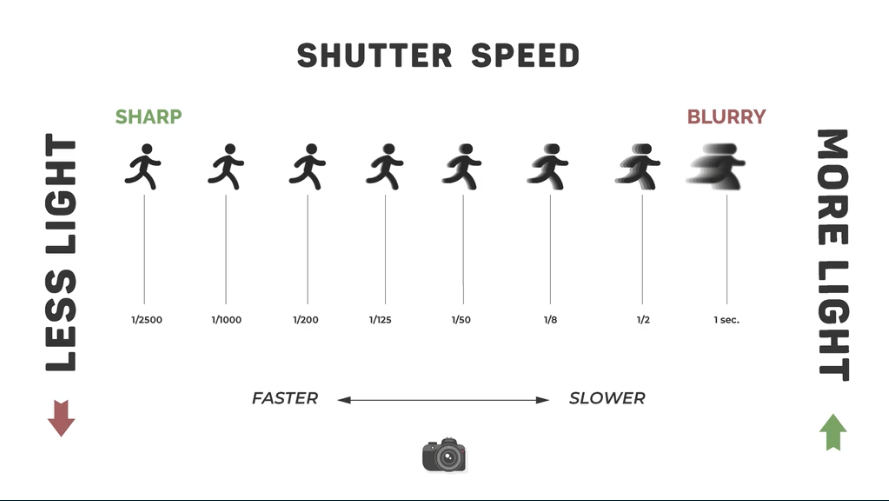

If you pieced it together from the title, Shutter Speed is the speed at which the shutter is open. When you press the "Take a Photo" button, the shutter opens to let light in, and the shutter speed dictates how long your photo is taking light in for! Photos with light streaks or blended water is done by using a slow shutter, which gives light plenty of time to get into the sensor, making what is known as a long exposure shot. Look at the image below to see how shutter works with blur and light! Values are shown as 1/100s for one one-hundredth of a second.
